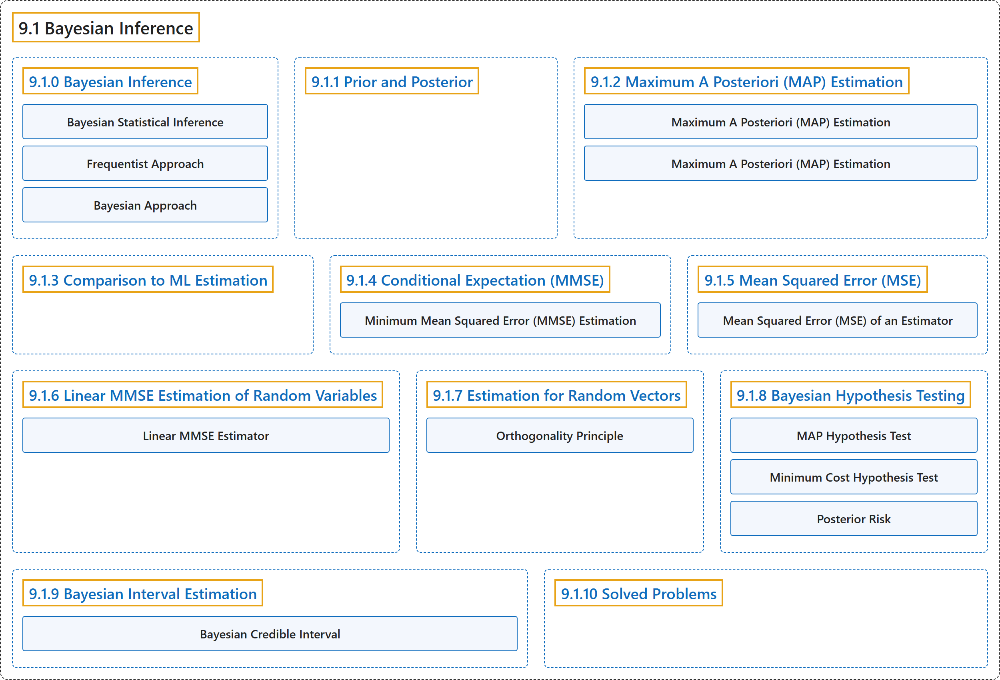

9.1 Bayesian Inference
Classification

Glossary
| Term | Definition | 中文翻译 | Source |
|---|---|---|---|
| 9.1 Bayesian Inference 贝叶斯推断 |
(No definition) | （无定义） | Pishro-Nik, 2014, section 9.1 |
| 9.1.0 Bayesian Inference 贝叶斯推断 |
(No definition) | （无定义） | Pishro-Nik, 2014, section 9.1.0 |
| Bayesian Statistical Inference 贝叶斯统计推断 |
"The posterior distribution is usually found using Bayes' formula. Using the posterior distribution, we can then find point or interval estimates of \(X\)." | 后验分布通常用贝叶斯公式求得。利用后验分布，我们就可以求出 \(X\) 的点估计或区间估计。 | Pishro-Nik, 2014, section 9.1.0 |
| Frequentist Approach 频率学派方法 |
"In the previous chapter, we discussed the frequentist approach to this problem. In that approach, the unknown quantity \(\theta\) is assumed to be a fixed (non-random) quantity that is to be estimated by the observed data." | 在上一章中，我们讨论了解决这一问题的频率学派方法。在该方法中，未知量 \(\theta\) 被假定为一个固定的（非随机的）量，由观测数据对其进行估计。 | Pishro-Nik, 2014, section 9.1.0 |
| Bayesian Approach 贝叶斯方法 |
"In the Bayesian framework, we treat the unknown quantity, \(\Theta\), as a random variable. More specifically, we assume that we have some initial guess about the distribution of \(\Theta\)." | 在贝叶斯框架中，我们把未知量 \(\Theta\) 视为一个随机变量。更具体地说，我们假定对 \(\Theta\) 的分布有某种初始猜测。 | Pishro-Nik, 2014, section 9.1.0 |
| 9.1.1 Prior and Posterior 先验与后验 |
(No definition) | （无定义） | Pishro-Nik, 2014, section 9.1.1 |
| 9.1.2 Maximum A Posteriori (MAP) Estimation 最大后验（MAP）估计 |
(No definition) | （无定义） | Pishro-Nik, 2014, section 9.1.2 |
| Maximum A Posteriori (MAP) Estimation 最大后验概率估计 |
"The MAP estimate of the random variable \(X\), given that we have observed \(Y=y\), is given by the value of \(x\) that maximizes" | 在已观测到 \(Y=y\) 的条件下，随机变量 \(X\) 的MAP 估计由使下式最大化的 \(x\) 值给出 | Pishro-Nik, 2014, section 9.1.2 |
| Maximum A Posteriori (MAP) Estimation 最大后验估计 |
"To find the MAP estimate of \(X\) given that we have observed \(Y=y\), we find the value of \(x\) that maximizes" | 要在已观测到 \(Y=y\) 的条件下求 \(X\) 的 MAP 估计，需找到使下式最大的 \(x\) 值 | Pishro-Nik, 2014, section 9.1.2 |
| 9.1.3 Comparison to ML Estimation 与最大似然估计的比较 |
(No definition) | （无定义） | Pishro-Nik, 2014, section 9.1.3 |
| 9.1.4 Conditional Expectation (MMSE) 条件期望（MMSE） |
(No definition) | （无定义） | Pishro-Nik, 2014, section 9.1.4 |
| Minimum Mean Squared Error (MMSE) Estimation 最小均方误差估计 |
"The minimum mean squared error (MMSE) estimate of the random variable \(X\), given that we have observed \(Y=y\), is given by \(\begin{align} \hat{x}_{M}=E[X\vert Y=y]. \end{align}\)" | 在已观测到 \(Y=y\) 的条件下，随机变量 \(X\) 的最小均方误差（MMSE）估计为 \(\begin{align} \hat{x}_{M}=E[X\vert Y=y]. \end{align}\) | Pishro-Nik, 2014, section 9.1.4 |
| 9.1.5 Mean Squared Error (MSE) 均方误差（MSE） |
(No definition) | （无定义） | Pishro-Nik, 2014, section 9.1.5 |
| Mean Squared Error (MSE) of an Estimator 估计量的均方误差 |
"Let \(\hat{X}=g(Y)\) be an estimator of the random variable \(X\), given that we have observed the random variable \(Y\). The mean squared error (MSE) of this estimator is defined as \(\begin{align} E[(X-\hat{X})^2]=E[(X-g(Y))^2]. \end{align}\)" | 设 \(\hat{X}=g(Y)\) 为在已观测到随机变量 \(Y\) 的条件下对随机变量 \(X\) 的一个估计量。该估计量的均方误差（MSE）定义为 \(\begin{align} E[(X-\hat{X})^2]=E[(X-g(Y))^2]. \end{align}\) | Pishro-Nik, 2014, section 9.1.5 |
| 9.1.6 Linear MMSE Estimation of Random Variables 随机变量的线性最小均方误差估计 |
(No definition) | （无定义） | Pishro-Nik, 2014, section 9.1.6 |
| Linear MMSE Estimator 线性最小均方误差估计量 |
"The linear MMSE estimator of the random variable \(X\), given that we have observed \(Y\), is given by \(\begin{align} \hat{X}_L&=\frac{\textrm{Cov}(X,Y)}{\textrm{Var}(Y)} (Y-EY)+ EX\\ &=\frac{\rho \sigma_X}{\sigma_Y} (Y-EY)+ EX. \end{align}\)" | 在已观测到 \(Y\) 的条件下，随机变量 \(X\) 的线性 MMSE 估计量为 \(\begin{align} \hat{X}_L&=\frac{\textrm{Cov}(X,Y)}{\textrm{Var}(Y)} (Y-EY)+ EX\\ &=\frac{\rho \sigma_X}{\sigma_Y} (Y-EY)+ EX. \end{align}\) | Pishro-Nik, 2014, section 9.1.6 |
| 9.1.7 Estimation for Random Vectors 随机向量的估计 |
(No definition) | （无定义） | Pishro-Nik, 2014, section 9.1.7 |
| Orthogonality Principle 正交性原理 |
"However, it is sometimes easier to use the orthogonality principle to find \(\hat{\mathbf{X}}_L\). We now explain how to use the orthogonality principle to find linear MMSE estimators." | 然而，利用正交性原理来求 \(\hat{\mathbf{X}}_L\) 有时更为简便。下面我们说明如何用正交性原理求线性 MMSE 估计量。 | Pishro-Nik, 2014, section 9.1.7 |
| 9.1.8 Bayesian Hypothesis Testing 贝叶斯假设检验 |
(No definition) | （无定义） | Pishro-Nik, 2014, section 9.1.8 |
| MAP Hypothesis Test 最大后验概率假设检验 |
"Choose the hypothesis with the highest posterior probability, \(P(H_i\vert Y=y)\). Equivalently, choose hypothesis \(H_i\) with the highest \(f_{Y}(y\vert H_i)P(H_i)\)." | 选择具有最高后验概率 \(P(H_i\vert Y=y)\) 的假设。等价地，选择假设 \(H_i\)，使 \(f_{Y}(y\vert H_i)P(H_i)\) 最大。 | Pishro-Nik, 2014, section 9.1.8 |
| Minimum Cost Hypothesis Test 最小代价假设检验 |
"We choose \(H_0\) if and only if \(\begin{align} \frac{f_{Y}(y\vert H_0)}{f_{Y}(y\vert H_1)} \geq \frac{P(H_1)C_{01}}{P(H_0) C_{10}}. \end{align}\) Equivalently, we choose \(H_0\) if and only if \(\begin{align} P(H_0\vert y) C_{10} \geq P(H_1\vert y) C_{01}. \end{align}\)" | 我们选择 \(H_0\) 当且仅当 \(\begin{align} \frac{f_{Y}(y\vert H_0)}{f_{Y}(y\vert H_1)} \geq \frac{P(H_1)C_{01}}{P(H_0) C_{10}}. \end{align}\) 等价地，我们选择 \(H_0\) 当且仅当 \(\begin{align} P(H_0\vert y) C_{10} \geq P(H_1\vert y) C_{01}. \end{align}\) | Pishro-Nik, 2014, section 9.1.8 |
| Posterior Risk 后验风险 |
"Note that \(P(H_0\vert y) C_{10}\) is the expected cost of accepting \(H_1\). We call this the posterior risk of accepting \(H_1\)." | 注意，\(P(H_0\vert y) C_{10}\) 是接受 \(H_1\) 的期望代价。我们称之为接受 \(H_1\) 的后验风险。 | Pishro-Nik, 2014, section 9.1.8 |
| 9.1.9 Bayesian Interval Estimation 贝叶斯区间估计 |
(No definition) | （无定义） | Pishro-Nik, 2014, section 9.1.9 |
| Bayesian Credible Interval 贝叶斯可信区间 |
"Given the observation \(Y=y\), the interval \([a,b]\) is said to be a \((1-\alpha)100\%\) credible interval for \(X\), if the posterior probability of \(X\) being in \([a,b]\) is equal to \(1-\alpha\)." | 给定观测 \(Y=y\)，若 \(X\) 落在 \([a,b]\) 内的后验概率等于 \(1-\alpha\)，则称区间 \([a,b]\) 为 \(X\) 的 \((1-\alpha)100\%\) 可信区间。 | Pishro-Nik, 2014, section 9.1.9 |
| 9.1.10 Solved Problems 例题详解 |
(No definition) | （无定义） | Pishro-Nik, 2014, section 9.1.10 |
References
Pishro-Nik, H. (2014). Introduction to probability, statistics, and random processes. Kappa Research. Retrieved October 28, 2026, from https://www.probabilitycourse.com/